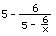
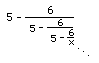

2a.
Get an infinite continued fraction and find approximations.
We can
take this function  and in place of x we'll put
, since this is equal to x and
and in place of x we'll put
, since this is equal to x and
we
get . Then we'll put
in for x again, and we get . If we keep doing that we get this infinite
continued fraction. Jonathan, at age 7, did this at home with his
Mom. He got all excited about this being infinite!
If you put 1 in the
first of these you get -1. If you put 1 in the second one you get 11. If
you put 1 in for x in the third one you get 4.4545.. You get an infinite
sequence which approaches 3, which is one of the two roots of the
equation.
If you start with -100, you would still get an infinite sequence approaching 3 as well. Notice, you only get the one root, 3, using method 2.
To order Don's
materials
Back to Ch. 8, part 2- iteration
Mathman home